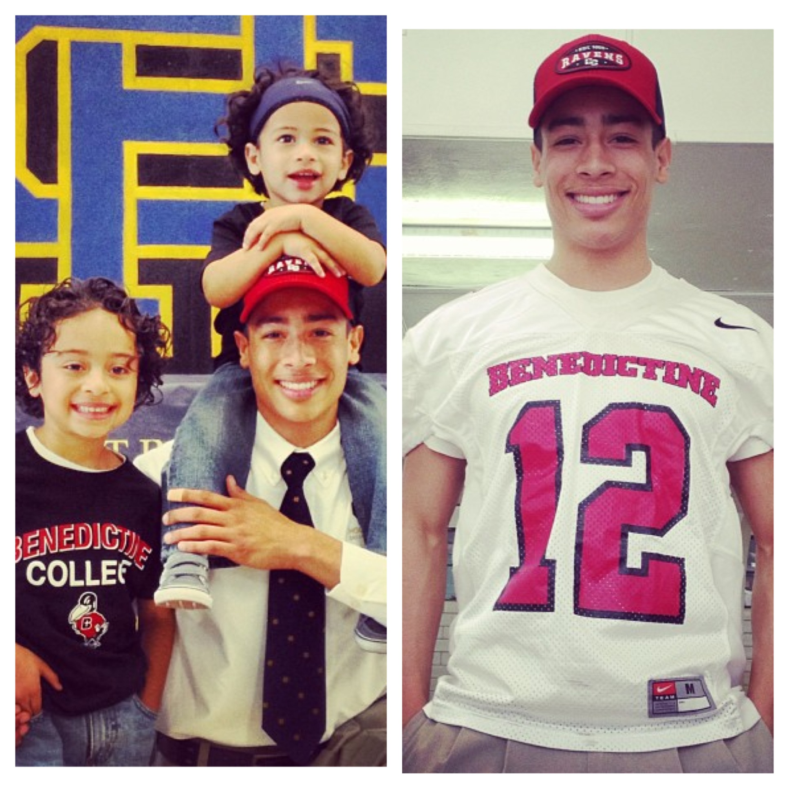

God, Family, Basketball
My name is Cassie Peoples and I am twenty- one years old. I am currently in my third year of college at University of Florida in Gainesville. Although I currently reside in Gainesville, I consider home to be in San Antonio, Texas.
I believe in putting God first in everything you do and to always thank him for the many blessings in life. In saying this, it is fair to say that God has blessed me with a wonderful supportive family.I am the oldest and only girl of three baby brothers. Thier names are Marcus Jr.(18), Logan (7), and Braden.
Aside from my responsibilities as an older sister, I am also a member of the University of Florida Womens Basketball Team. I am in my second season as a Gator and have loved representing my University.
